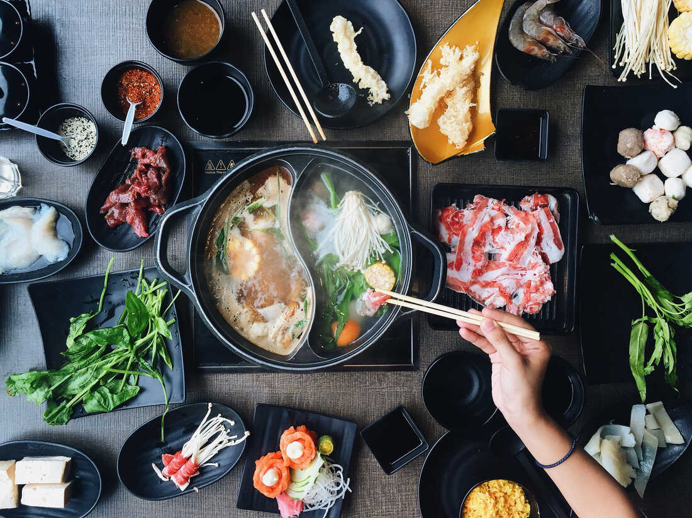

HOTPOT RECIPE

Ingredients:
- Broth (chicken, vegetable, or beef): 8 cups
- Thinly sliced meat (beef, lamb, chicken): 1 pound
- Assorted vegetables (bok choy, napa cabbage, mushrooms, etc.): 2 cups
- Tofu: 1 cup, cubed
- Shrimp or fish balls: ½ cup
- Udon noodles or glass noodles: 1 cup, cooked
- Green onions: ½ cup, chopped
- Soy sauce or dipping sauce
- Chili sauce or paste (optional)
- Sesame oil for seasoning (optional)
- Other optional additions: sliced garlic, cilantro, thinly sliced chili peppers
Method:
- Pour the broth into a hotpot or large pot and bring it to a gentle simmer on a portable burner or stovetop.
- Arrange thinly sliced meat, assorted vegetables, tofu, shrimp or fish balls, and cooked noodles on separate plates for easy access.
- Place the raw ingredients into the simmering broth to cook. Cooking times will vary based on the ingredients.
- Use a ladle or chopsticks to cook the ingredients. Once cooked, retrieve them from the broth and place them in individual bowls.
- Prepare dipping sauces by mixing soy sauce with chili sauce or sesame oil, if desired.
- Enjoy the cooked ingredients with your preferred dipping sauces.
- You can also add green onions, sliced garlic, cilantro, or chili peppers to enhance the flavors.
- Keep the broth simmering and continue cooking more ingredients as desired.
- Once finished, enjoy any remaining broth as a delicious soup.
Hotpot is Ready to Enjoy!!!